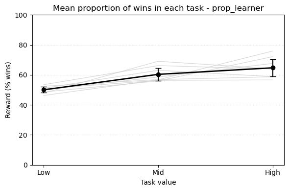
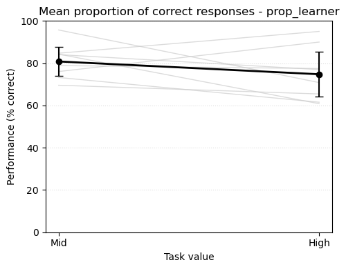
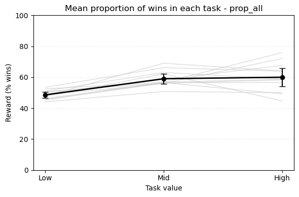
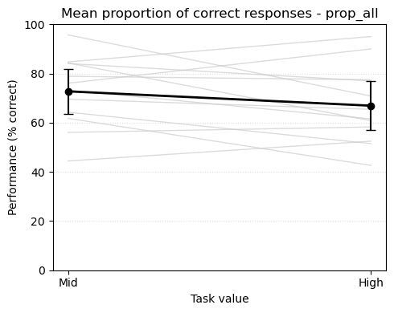
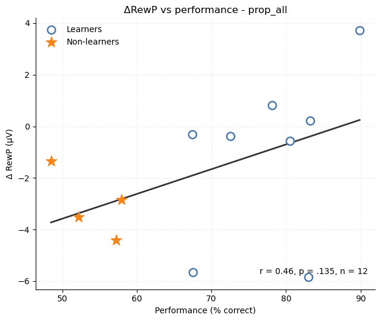

Statistical results
Behavioral results
Main analysis (learners only). In the learner-only sample (n = 8), the behavioral manipulation was preserved. The mean proportion of winning trials increased across task values, from 50.06% (95% CI [48.06, 52.06]) in the low-value task to 60.35% (95% CI [56.09, 64.60]) in the mid-value task and 64.72% (95% CI [59.02, 70.42]) in the high-value task, F(2,14) = 14.30, p < .001, ηp² = 0.67, ηg² = 0.62. This pattern is qualitatively consistent with the original study, in which win rates also increased with task value (Figure 1).

Mean performance, defined as the proportion of correct responses to high-value cues, was numerically higher in the mid-value block (80.81%, 95% CI [73.96, 87.67]) than in the high-value block (74.77%, 95% CI [64.16, 85.37]), but this difference was not statistically significant, t(7) = 1.22, p = .263, Cohen’s d = 0.43. This is in line with the original study, which likewise reported no reliable difference between these two task contexts(Figure 2).

As a sensitivity analysis, we repeated the same behavioral tests in the full available sample (n = 12). The overall pattern was similar: win rates still differed across task values, F(2,22) = 14.08, p < .001, ηp² = 0.56, ηg² = 0.42(Figure 3), and mean performance remained numerically higher in the mid-value block (72.76%, 95% CI [63.64, 81.87]) than in the high-value block (66.92%, 95% CI [56.92, 76.93])(?@fig-performance_all), although this comparison again did not reach significance, t(11) = 1.55, p = .149, Cohen’s d = 0.45.


RewP results
For the learner-only sample, the planned RewP comparisons did not reveal reliable task-level differences. For high-value cues, the RewP was 0.94 μV (95% CI [-3.44, 5.32]) in the mid-value task and 1.94 μV (95% CI [-2.38, 6.26]) in the high-value task, with no evidence of a significant difference, t(7) = -0.87, p = .411, Cohen’s d = -0.31. The exact paired permutation test supported the same conclusion (p = .359). For low-value cues, the RewP was 2.85 μV (95% CI [-0.78, 6.49]) in the mid-value task and 2.76 μV (95% CI [-2.33, 7.86]) in the low-value task, again with no reliable difference, t(7) = 0.04, p = .967, Cohen’s d = 0.02; the paired permutation result was likewise non-significant (p = .992).
The full-sample sensitivity analysis (n = 12) showed the same overall pattern. For high-value cues, the RewP was 0.89 μV (95% CI [-1.79, 3.57]) in the mid-value task and 2.57 μV (95% CI [-0.21, 5.34]) in the high-value task, yielding a non-significant comparison, t(11) = -2.04, p = .066, Cohen’s d = -0.59; the paired permutation test gave a nearly identical result (p = .064). For low-value cues, the RewP was 2.39 μV (95% CI [-0.10, 4.89]) in the mid-value task and 2.82 μV (95% CI [-0.31, 5.95]) in the low-value task, with no evidence of a difference, t(11) = -0.30, p = .771, Cohen’s d = -0.09; the paired permutation result was again non-significant (p = .806).
Overall, these findings only partially match the original study. Similar to the original report, the low-value cue comparison did not show a reliable RewP difference. However, the critical high-value cue comparison was not replicated: whereas the original study found a larger RewP in the mid-value than in the high-value task, our data did not show a significant difference, and the numerical trend was in the opposite direction.
Relationship between RewP and performance
Across all available participants (n = 12), the difference in RewP between the mid-value and high-value tasks was positively correlated with behavioral performance (r = 0.46, p = .135). Thus, the direction of the association matched the original study, but the effect was not statistically significant in the reduced sample. The original study reported a significant positive association across participants(?@fig-rewp_learner).
